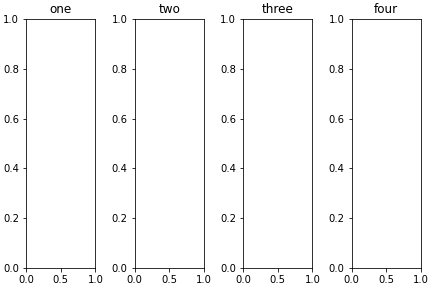
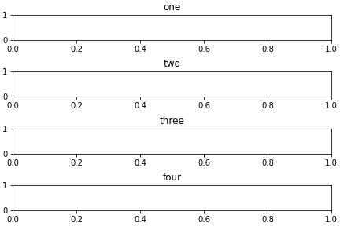
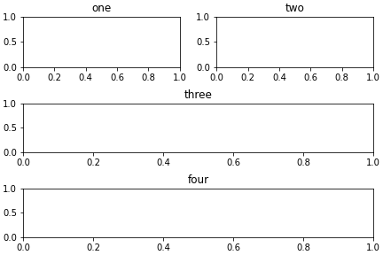

create_subplots¶
-
isopy.tb.create_subplots(figure, subplots, *, constrained_layout=True, **figure_options)[source]¶ Create subplots for a figure.
- Parameters
figure (figure, plt) – A matplotlib Figure object or any object with a
.gcf()method that returns a matplotlib Figure object, Such as a matplotlib pyplot instance.subplots (str, list) – A nested list of subplot names. A visual layout of how you want your subplots to be arranged labeled as strings. subplots must be a 2-dimensional but items in the list can contain futher 2-dimensional lists. Use
Nonefor empty spaces.constraned_layout (bool) – If
Trueuseconstrained_layoutwhen drawing the figure. Advised to avoid overlapping axis labels.figure_options – Any valid option for
update_figure().
- Returns
subplots – A dictionary containing the freshly created subplots.
- Return type
dict
Examples
>>> subplots = [['one', 'two', 'three', 'four']] >>> axes = isopy.tb.create_subplots(plt, subplots) >>> for name, ax in axes.items(): ax.set_title(name) >>> plt.show()
>>> subplots = [['one'], ['two'], ['three'], ['four']] >>> axes = isopy.tb.create_subplots(plt, subplots) >>> for name, ax in axes.items(): ax.set_title(name) >>> plt.show()
>>> subplots = [[ [['one', 'two']] ], ['three'], ['four']] >>> axes = isopy.tb.create_subplots(plt, subplots) >>> for name, ax in axes.items(): ax.set_title(name) >>> plt.show()
